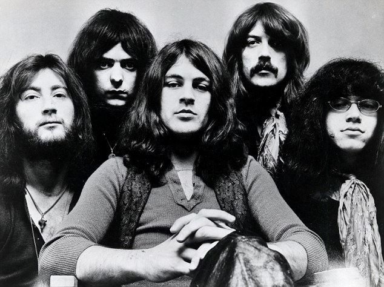

<!DOCTYPE html>
<html>
<head>
  <title>Deep Purple Fanpage!</title>
</head>
</html>
<body>
  <h1>Welcome to the Deep Purple Fanpage!</h1>
  <h2>Bio</h2>
  <p>
    Deep Purple is a British band that got their start in the mid to late 1960's. Coming up with other local contemporaries Led Zeppelin and Black Sabbath, they helped forge a sound that would push rock music one step further to the creation of Heavy Metal. The classic lineup included the likes of Ian Gillan, who's vocal technigue and prowess formed the foundation for generations of screaming rock and metal vocalists, Ritchie Blackmore, who's affinity toward classic music shines through his cutting solos and rhythms, creating the bedrock for the neoclassical revolution, and Jon Lord, who also helped bridge the sound of the electronic organ with classical sounds.
  </p>
  <h2>
    The band circa the album <a href="https://en.wikipedia.org/wiki/Machine_Head_(album)">"Machine Head"</a>
  </h2>
  
  <h2>Top 3 best Deep Purple songs:</h2>
  <ol>
    <li>Highway Star</li>
    <li>Smoke on the Water</li>
    <li>Space Truckin'</li>
  </ol>
  <h2>The alternate Smoke on the Water take...</h2>
  <p>
    The version of Smoke on the Water everyone is familiar with was not the original cut of the song. The original was slightly longer, and had a completely different guitar solo! Ritchie Blackmore cited this cut as being his preferred of the two. If you listen to it in the link below, you may also find the sound of the recording to be crisper and less "rounded" than the more famous release.
  </p>
  <iframe width="854" height="480" src="https://www.youtube.com/embed/BFshSEerrns" frameborder="0" allowfullscreen></iframe>
</body>
